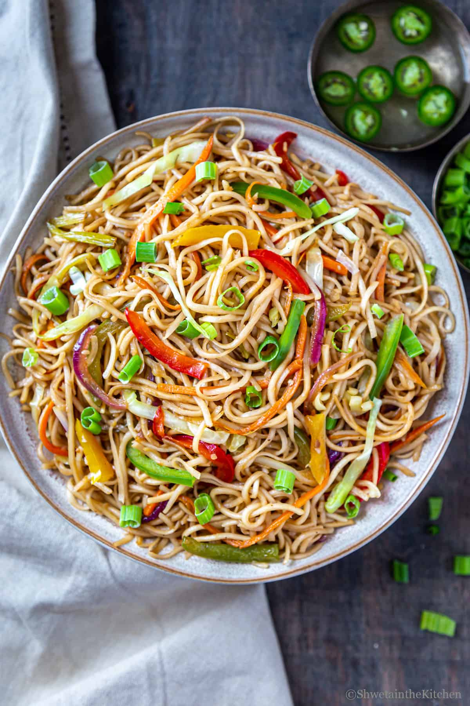

Recipe of Veg Noodles

Description
Vegetarian noodles offer a vibrant and satisfying dish packed with colorful vegetables and flavorful seasonings. The dish typically features a medley of crisp and tender vegetables, such as crunchy bell peppers, sweet carrots, earthy mushrooms, and refreshing snow peas, all expertly sliced or julienned to ensure a delightful mix of textures. Fragrant garlic and ginger infuse the dish with aromatic warmth, complementing the savory notes of soy sauce and the nutty richness of sesame oil. Whether using traditional egg noodles, delicate rice noodles, or hearty wheat noodles as a base, vegetarian noodles promise a harmonious blend of flavors and textures, making them a versatile and wholesome option for a deliciously satisfying meal.
Ingredients
for boiling noodles:
- 6 cup water
- 1 tsp salt
- 1 tsp oil
- 125 grams noodles
other ingredients:
- 2 tbsp oil
- 2 clove garlic, finely chopped
- 1 inch ginger, finely chopped
- 1 chilli, slit
- ½ onion, sliced
- 2 tbsp spring onion, chopped
- ½ carrot, chopped
- ¼ green capsicum, chopped
- 5 snow pea, chopped
- 5 beans, chopped
- ¼ red capsicum, chopped
- 5 florets broccoli
- 3 tbsp cabbage, shredded
- 2 tbsp tomato sauce
- 1 tbsp soy sauce
- 1 tbsp vinegar
- 1 tbsp chilli sauce
- ¼ tsp pepper powder
- ½ tsp salt
Steps
- firstly, in a large vessel take 6 cup water, 1 tsp salt and 1 tsp oil.
- once the water comes to a boil place a pack of hakka noodles (125 gm)
- boil the noodles for 3 minutes or till it turns al dente. refer package instructions to know the exact cooking time.
- drain off the water from noodles and pour 1 cup of cold water to prevent from further cooking.
- drizzle 1 tsp oil and mix gently, to avoid noodles from sticking to each other. keep aside.
- now in a large kadai heat 2 tbsp oil and saute 2 clove garlic, 1 inch ginger and 1 chilli.
- saute ½ onion, 2 tbsp spring onion on high flame.
- further add ½ carrot, ¼ green capsicum, 5 snow pea, 5 beans, chopped, ¼ red capsicum and 5 florets broccoli.
- stir fry on high flame for 2 minutes or until veggies are cooked yet retain their crunch.
- also add 3 tbsp cabbage and stir fry.
- further add 2 tbsp tomato sauce, 1 tbsp soy sauce, 1 tbsp vinegar, 1 tbsp chilli sauce, ¼ tsp pepper powder and ½ tsp salt.
- stir fry until sauces are well combined.
- add in boiled noodles and mix gently.
- toss and mix until noodles are cooked completely.
- finally, garnish with spring onion and enjoy veg noodles.